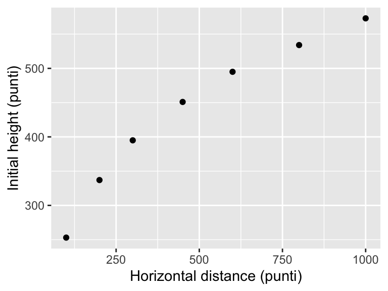
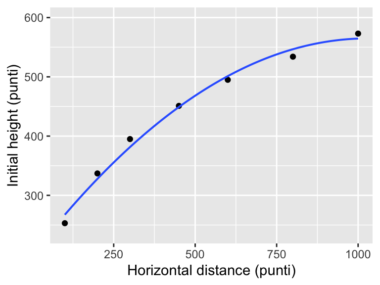
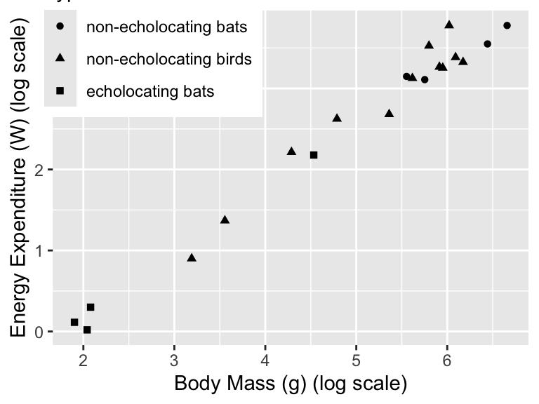

library(ggformula) # graphics
library(Sleuth3) # Sleuth data sets
library(broom) # extract pieces of lm output
library(gridExtra) # arrange multiple plots on a page
library(stargazer) # tables to display/compare models6 Inferential Tools for Multiple Regression
In this chapter we need to load the following packages (remember, you will need to install packages you have never used before if you are using your own computer).
We will also set some options to improve legibility of graphs and output.
options(digits=4) # display four significant digits by default7 Galileo’s data on the motion of falling bodies
Galileo investigated the relationship between height and horizontal distance. This is the question addressed in case study 10.1 in the Sleuth.
7.1 Data coding, summary statistics and graphical display
We begin by reading the data and summarizing the variables.
summary(case1001) Distance Height
Min. :253 Min. : 100
1st Qu.:366 1st Qu.: 250
Median :451 Median : 450
Mean :434 Mean : 493
3rd Qu.:514 3rd Qu.: 700
Max. :573 Max. :1000 There were a total of 7 trials of Galileo’s experiment. For each trial, he recorded the initial height and then measured the horizontal distance as shown in Display 10.1 (page 272). We can start to explore this relationship by creating a scatterplot of Galileo’s horizontal distances versus initial heights. The following graph is akin to Display 10.2 (page 273).
gf_point(Distance ~ Height, data = case1001) %>%
gf_labs(x = "Horizontal distance (punti)", y = "Initial height (punti)")
7.2 Models
The first model created is a cubic model as interpreted on page 273 and summarized in Display 10.13 (page 291).
galileo_lm1 <- lm(Distance ~ Height + I(Height^2) + I(Height^3), data = case1001)
summary(galileo_lm1)
Call:
lm(formula = Distance ~ Height + I(Height^2) + I(Height^3), data = case1001)
Residuals:
1 2 3 4 5 6 7
-2.4036 3.5809 1.8917 -4.4688 -0.0804 2.3216 -0.8414
Coefficients:
Estimate Std. Error t value Pr(>|t|)
(Intercept) 1.56e+02 8.33e+00 18.71 0.00033 ***
Height 1.12e+00 6.57e-02 16.98 0.00044 ***
I(Height^2) -1.24e-03 1.38e-04 -8.99 0.00290 **
I(Height^3) 5.48e-07 8.33e-08 6.58 0.00715 **
---
Signif. codes: 0 '***' 0.001 '**' 0.01 '*' 0.05 '.' 0.1 ' ' 1
Residual standard error: 4.01 on 3 degrees of freedom
Multiple R-squared: 0.999, Adjusted R-squared: 0.999
F-statistic: 1.6e+03 on 3 and 3 DF, p-value: 2.66e-05We next decrease the polynomial for Height by one degree to obtain a quadratic model as interpreted on page 273 and summarized in Display 10.7 (page 281). This model is used for most of the following results.
galileo_lm2 <- lm(Distance ~ Height + I(Height^2), data = case1001)
summary(galileo_lm2)
Call:
lm(formula = Distance ~ Height + I(Height^2), data = case1001)
Residuals:
1 2 3 4 5 6 7
-14.31 9.17 13.52 1.94 -6.18 -12.61 8.46
Coefficients:
Estimate Std. Error t value Pr(>|t|)
(Intercept) 2.00e+02 1.68e+01 11.93 0.00028 ***
Height 7.08e-01 7.48e-02 9.47 0.00069 ***
I(Height^2) -3.44e-04 6.68e-05 -5.15 0.00676 **
---
Signif. codes: 0 '***' 0.001 '**' 0.01 '*' 0.05 '.' 0.1 ' ' 1
Residual standard error: 13.6 on 4 degrees of freedom
Multiple R-squared: 0.99, Adjusted R-squared: 0.986
F-statistic: 205 on 2 and 4 DF, p-value: 9.33e-05The following figure replicates Display 10.2 (page 273), displaying the fitted quadratic model.
gf_point(Distance ~ Height, data = case1001) %>%
gf_lm(formula = y ~ x + I(x^2)) %>%
gf_labs(x = "Horizontal distance (punti)", y = "Initial height (punti)")Warning: Using the `size` aesthetic with geom_line was deprecated in ggplot2 3.4.0.
ℹ Please use the `linewidth` aesthetic instead.
To obtain the expected values of \(\widehat{\mu}({\rm Distance}|{\rm Height} = 0)\) and \(\widehat{\mu}({\rm Distance}|{\rm Height} = 250)\), we use the predict() command with the quadratic model as shown in Display 10.7 (page 281).
predict(galileo_lm2, newdata = data.frame(Height = c(0, 250)), interval = "confidence") fit lwr upr
1 199.9 153.4 246.4
2 355.5 337.1 373.9We can also verify the above confidence interval calculations with the following code:
# Obtain the fitted value and SE
predict(galileo_lm2, newdata = data.frame(Height = c(0, 250)), interval = "confidence", se.fit = TRUE)$fit
fit lwr upr
1 199.9 153.4 246.4
2 355.5 337.1 373.9
$se.fit
1 2
16.759 6.625
$df
[1] 4
$residual.scale
[1] 13.64# "by-hand" calculation
355.5 + c(-1, 1) * qt(0.975, df = 4) * 6.625 [1] 337.1 373.9To verify numbers on page 284, an interval for the predicted values , we used the following code:
predict(galileo_lm2, newdata = data.frame(Height = c(0, 250)), interval = "predict") fit lwr upr
1 199.9 139.9 259.9
2 355.5 313.4 397.6Lastly, we produced an ANOVA for the quadratic model interpreted on page 288 (Display 10.11). Notice that to get the entries for the “Regression” row on Display 10.11, you need to add the entries from the first two rows. This is because R displays sequential sums of squares and degrees of freedom. (Caution: Only the last p-value is valid!)
anova(galileo_lm2)Analysis of Variance Table
Response: Distance
Df Sum Sq Mean Sq F value Pr(>F)
Height 1 71351 71351 383.6 4e-05 ***
I(Height^2) 1 4927 4927 26.5 0.0068 **
Residuals 4 744 186
---
Signif. codes: 0 '***' 0.001 '**' 0.01 '*' 0.05 '.' 0.1 ' ' 18 Echolocation in bats
How do bats make their way about in the dark? Echolocation requires a lot of energy. Does it depend on mass and species? This is the question addressed in case study 10.2 in the Sleuth.
8.1 Data coding, summary statistics and graphical display
We begin by reading the data, performing transformations where necessary and summarizing the variables.
case1002$Type <-factor(case1002$Type,
levels = c("non-echolocating bats", "non-echolocating birds",
"echolocating bats"))
summary(case1002) Mass Type Energy
Min. : 6.7 non-echolocating bats : 4 Min. : 1.02
1st Qu.: 63.4 non-echolocating birds:12 1st Qu.: 7.61
Median :266.5 echolocating bats : 4 Median :22.60
Mean :262.7 Mean :19.52
3rd Qu.:391.0 3rd Qu.:28.23
Max. :779.0 Max. :43.70 A total of 20 flying vertebrates were included in this study. There were 4 echolocating bats, 4 non-echolocating bats, and 12 non-echolocating birds. For each subject their mass and flight energy expenditure were recorded as shown in Display 10.3 (page 274).
Next, we explore the relationship between log(energy expenditure) as a function of log(body mass) for each group with a scatterplot. The following figure reproduces Display 10.4 (page 275).
gf_point(log(Energy) ~ log(Mass), data = case1002, shape = ~Type) %>%
gf_labs(x = "Body Mass (g) (log scale)", y = "Energy Expenditure (W) (log scale)") %>%
gf_theme(legend.position=c(.2, .9)) # 0,0 is the bottom left; 1,1 is the top right
8.2 Multiple regression
We first evaluate a multiple regression model for log(energy expenditure) given type of species and log(body mass) as defined on page 276 and shown in Display 10.6 (page 277).
energy_lm1 <- lm(log(Energy) ~ log(Mass) + Type, data = case1002)
summary(energy_lm1)
Call:
lm(formula = log(Energy) ~ log(Mass) + Type, data = case1002)
Residuals:
Min 1Q Median 3Q Max
-0.2322 -0.1220 -0.0364 0.1257 0.3446
Coefficients:
Estimate Std. Error t value Pr(>|t|)
(Intercept) -1.5764 0.2872 -5.49 5.0e-05 ***
log(Mass) 0.8150 0.0445 18.30 3.8e-12 ***
Typenon-echolocating birds 0.1023 0.1142 0.90 0.38
Typeecholocating bats 0.0787 0.2027 0.39 0.70
---
Signif. codes: 0 '***' 0.001 '**' 0.01 '*' 0.05 '.' 0.1 ' ' 1
Residual standard error: 0.186 on 16 degrees of freedom
Multiple R-squared: 0.982, Adjusted R-squared: 0.978
F-statistic: 284 on 3 and 16 DF, p-value: 4.46e-14Next, we calculate confidence intervals for the coefficients that are interpreted on page 278.
confint(energy_lm1) 2.5 % 97.5 %
(Intercept) -2.1853 -0.9674
log(Mass) 0.7205 0.9094
Typenon-echolocating birds -0.1398 0.3443
Typeecholocating bats -0.3510 0.5083exp(confint(energy_lm1)) 2.5 % 97.5 %
(Intercept) 0.1124 0.3801
log(Mass) 2.0555 2.4828
Typenon-echolocating birds 0.8695 1.4110
Typeecholocating bats 0.7040 1.6625Since the significance of a model depends on which variables are included, Sleuth proposes two other models, one only looking at the type of flying animal and the other allows the three groups to have different straight-line regressions with mass. These two models are displayed below and discussed on pages 278-279.
energy_lm2 <- lm(log(Energy) ~ Type, data = case1002)
energy_lm3 <- lm(log(Energy) ~ log(Mass) * Type, data = case1002)Table 1 presents the models displays on page 279 using stargazer.
stargazer(energy_lm2, energy_lm1, energy_lm3, type = "latex", digits = 2,
omit.table.layout = "sn",
title = "Coefficients and standard errors for the three models on pare 279 in Sleuth.",
header=FALSE,
covariate.labels = c("lmass", "bird", "ebat", "bird:lmass", "ebat:lmass"))Next we can assess the model by evaluating the extra sums of squares F-test for testing the equality of intercepts in the parallel regression lines model as shown in Display 10.10 (page 287).
energy_slr <- lm(log(Energy) ~ log(Mass), data = case1002)
anova(energy_slr, energy_lm1)Analysis of Variance Table
Model 1: log(Energy) ~ log(Mass)
Model 2: log(Energy) ~ log(Mass) + Type
Res.Df RSS Df Sum of Sq F Pr(>F)
1 18 0.583
2 16 0.553 2 0.0296 0.43 0.66We can also compare the full model with interaction terms and the reduced model (without interaction terms) with the extra sum of squares F-test as described in Display 10.12 (page 290).
anova(energy_lm1, energy_lm3)Analysis of Variance Table
Model 1: log(Energy) ~ log(Mass) + Type
Model 2: log(Energy) ~ log(Mass) * Type
Res.Df RSS Df Sum of Sq F Pr(>F)
1 16 0.553
2 14 0.505 2 0.0484 0.67 0.538.3 Linear combinations of regression coefficients
Finally, we can obtain the standard error for \(\beta_2 - \beta_3\), as detailed on Display 10.15 (page 294), using the below commands:
# 1. estimate the linear combination
estimate <- coef(energy_lm1)[3] - coef(energy_lm1)[4]
estimateTypenon-echolocating birds
0.0236 # 2. Obtain the variance-covariance matrix of the coefficients
V <- vcov(energy_lm1)
V (Intercept) log(Mass) Typenon-echolocating birds
(Intercept) 0.08250 -0.012105 -0.019207
log(Mass) -0.01211 0.001984 0.001731
Typenon-echolocating birds -0.01921 0.001731 0.013038
Typeecholocating bats -0.05056 0.006870 0.014639
Typeecholocating bats
(Intercept) -0.05056
log(Mass) 0.00687
Typenon-echolocating birds 0.01464
Typeecholocating bats 0.04108# 3. Calculate the estimated variance of the linear combination
v.b2 <- V[3, 3]
v.b2[1] 0.01304v.b3 <- V[4, 4]
v.b3[1] 0.04108cov.b2b3 <- V[3, 4]
cov.b2b3[1] 0.01464estimated_var <- v.b2 + v.b3 - 2 * cov.b2b3
estimated_var[1] 0.02484se <- sqrt(estimated_var)
se[1] 0.1576